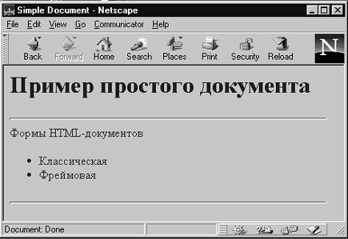
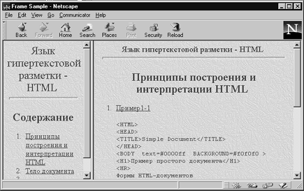

Все тэги НТМL по их назначению и области действия можно разделить на следующие основные группы
Структура гипертекстовой сети задается гипертекстовыми ссылками. Гипертекстовая ссылка - это адрес другого HTML документа или информационного ресурса Internet, который тематически, логически или каким-либо другим способом связан с документом, в котором ссылка определена.
Для записи гипертекстовых ссылок в системе WWW была разработана специальная форма, которая называется Universe Resource Locator. Типичным примером использования этой записи можно считать следующий пример:
Этот текст содержит <A HREF="http://uic.rsu.ru/html/index.html"> гипертекстовую ссылку</A>
В приведенном выше примере тэг "A", который в HTML называют якорем (anchor), использует атрибут "HREF", который обозначает гипертекстовую ссылку (Hypertext Reference), для записи этой ссылки в форме URL. Данная ссылка указывает на документ с именем "index.html" в директории "html" на сервере "uic.rsu.ru", доступ к которому осуществляется по протоколу "http".
Гипертекстовые ссылки в HTML делятся на два класса: контекстные гипертекстовые ссылки и общие. Контекстные ссылки вмонтированы в тело документа, как это было продемонстрировано в предыдущем примере, в то время как общие ссылки связаны со всем документом в целом и могут быть использованы при просмотре любого фрагмента документа. Оба класса ссылок присутствуют в стандарте языка с самого его рождения, однако, первоначально наибольшей популярностью пользовались контекстные ссылки. Эта популярность привела к тому, что механизм использования общих ссылок практически полностью "атрофировался". Однако по мере стандартизации интерфейса пользователя и стилей представления информации разработчики языка снова вернулись к общим ссылкам и стремятся приспособить их к задачам управления этим интерфейсом. Справедливости ради, следует отметить, что общие гипертекстовые ссылки в большинстве броузеров не используются и не отображаются.
Структура HTML-документа позволяет использовать вложенные друг в друга контейнеры. Собственно, сам документ - это один большой контейнер который начинается с тэга <HTML> и заканчивается тэгом </HTML>:
<HTML> Содержание документа </HTML>
Контейнер HTML или гипертекстовый документ состоит из двух других вложенных контейнеров: заголовка документа (HEAD) и тела документа (BODY):
Рассмотрим простейший пример классического документа:
<HTML> <HEAD> <TITLE>Simple Document</TITLE> </HEAD> <BODY text=#0000ff BGCOLOR=#ff0000 > <H1>Пример простого документа</H1> <HR> Формы HTML-документов <UL> <LI>Классическая <LI>Фреймовая </UL> <HR> </BODY> </HTML>

Рис. 1.1. Пример простого документа
Щелкните здесь, чтобы просмотреть пример 1.1 в браузере
Компания Netscape Communication расширила классическую форму документа возможностью организации фреймов (кадров), позволяющих разделить рабочее окно программы просмотра на несколько независимых фреймов. В каждый фрейм может быть загружена своя страница HTML. Приведем пример документа с фреймами.
<HTML> <HEAD> <TITLE>Frame Sample</TITLE> </HEAD> <FRAMESET COLS="30%,*"> <FRAME SRC=first.html NAME=LEFT> <FRAME SRC=kompani1.html NAME=RIGHT> </FRAMESET> </HTML>

Рис. 1.2. Пример документа с фреймами
Щелкните здесь, чтобы просмотреть пример 1.2 в браузере
Назад | Содержание | Вперед